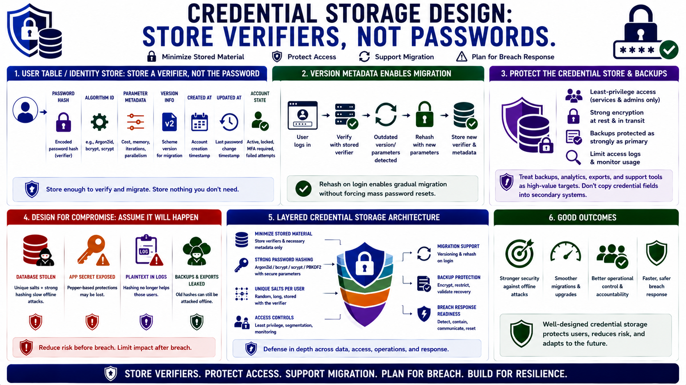

Credential Storage Architecture
Connecting to LMS... Progress: in progress

Narration
Credential storage design starts with the user table or identity store. The system should store a password verifier, not the password itself. Useful fields often include the encoded password hash, algorithm identifier, parameter metadata, version information, timestamps, and account state needed for authentication workflows. The goal is to store enough information to verify and migrate credentials without storing unnecessary credential material.
Version metadata supports migration. Over time, teams may move from one algorithm to another or increase cost parameters. Rehashing on login is a common strategy: after a successful authentication, the system detects that the stored verifier uses older parameters and replaces it with a new verifier generated from the presented password. This allows gradual migration without forcing every user through a reset on the same day.
Credential databases and backups should be protected as sensitive assets. Access should be limited to the services and administrators that truly need it. Backups should receive the same or stronger protection as the primary store because an attacker with old hashes can still attempt offline guessing. Analytics exports, support tools, and reporting queries should avoid copying credential fields into secondary systems.
Design should assume compromise is possible. If the database is stolen, unique salts and strong password hashing slow offline attacks. If the application secret is also exposed, pepper-based protections may be lost. If logs contain plaintext passwords, hashing no longer helps those users. Credential storage architecture is therefore a layered design: minimize stored material, protect access, support migration, and plan for breach response.